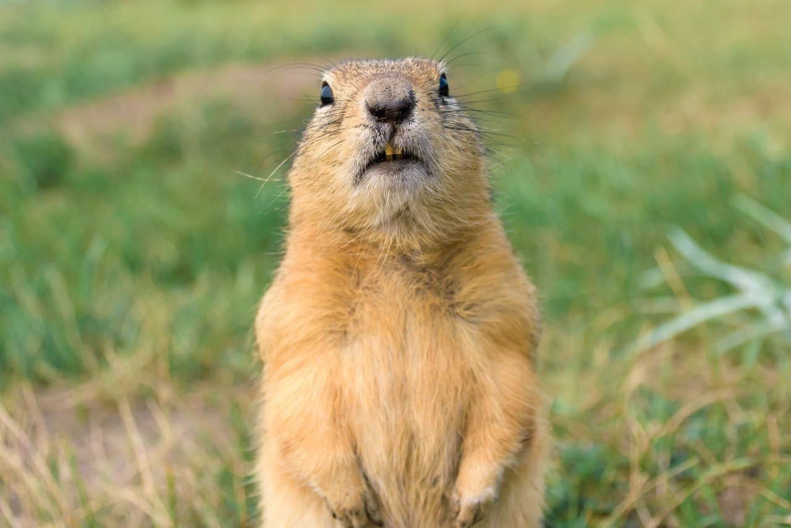

Суслики (лат. Spermophilus) — род грызунов семейства беличьих (Sciuridae). Живут в открытых местах обитания, таких как луга, лугостепи и полупустыни. Питаются низкими растениями и используют норы в качестве гнёзд и убежищ. Ведут дневной образ жизни и в основном живут колониями, хотя некоторые виды могут встречаться и поодиночке. Зимой впадают в спячку, а в засушливых регионах могут проводить в спячке летние или осенние месяцы.
